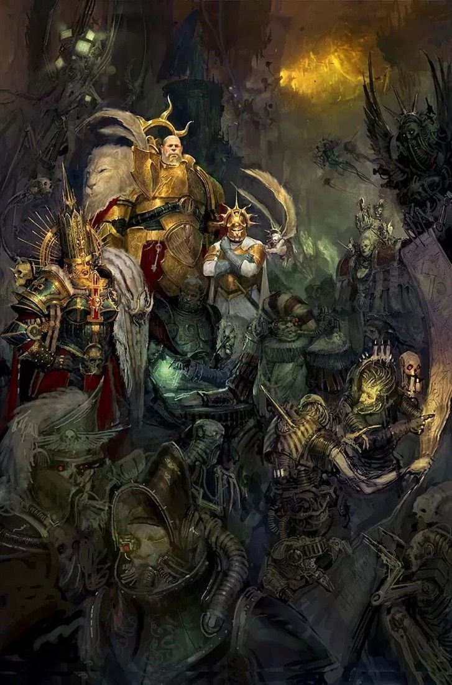

Chancellor of the Imperial Council
| Chancellor of the Imperial Council | |
|---|---|
| Officer of the Senatorum Imperialis | |
 The chamber of the High Lords of Terra in the early Era Indomitus, with its attendant scribes | |
| Office | |
| Status | Lesser member of the Senatorum; not one of the High Twelve |
| Body | Senatorum Imperialis, Terra |
| Presiding officer | Lord Commander of the Imperium and Imperial Regent, when the offices are filled |
| Recorded holders | Alexei Lev Tieron, at the time of the Thirteenth Black Crusade (date not recorded in the sources checked) |
| Duties | Agendas, the order of debate, the keeping of the rolls |
| Known for | Managing the records of the Senatorum |
The Chancellor of the Imperial Council is the bureaucratic officer who manages the daily business of the Senatorum Imperialis, the council that governs the Imperium of Mankind from Terra. The office is not one of the twelve High Lords of Terra, and it carries no vote of its own in the recorded procedure. Its holder is nonetheless a powerful figure, because the Chancellor controls the agendas, the minutes and the archives on which the council acts.
The title is recorded in the lists of the Senatorum as a lesser member, sitting alongside officials such as the Commandant of the Schola Progenium and the Lord Constable of the Synopticon when they are admitted as full members.[1] Imperial sources do not agree on whether the Chancellor was a full member of the council in every period.
Office and standing
[edit]The Senatorum is led by a chair, who holds the offices of Lord Commander of the Imperium and Imperial Regent when those are filled. The chair is first among equals. The Chancellor's place is below the chair. Imperial records describe the Chancellor as a senior bureaucrat rather than a military or political leader, with the Administratum as the wider civil service the office draws on.[2]
The record does not give the Chancellor a fixed term. Holders are named in the rolls when a session is recorded, and the sources checked for this article name only one holder by name.
History
[edit]Origins
[edit]The Senatorum traces its origin to the Council of Terra, which governed the Imperium while the Emperor led the Great Crusade and the Regent held Terra in the Emperor's name. The post of Chancellor appears in the records only after the Senatorum was established by Roboute Guilliman in the aftermath of the Horus Heresy, c. 014.M31 to 021.M31, when the council was reorganised and its members were set at twelve.[3]
The mid-32nd millennium
[edit]After the War of the Beast and The Beheading, the Senatorum passed through a period of political upheaval, dated c. 546–646.M32 in the Imperial record. The Chancellor's role in the rolls of this period is poorly documented, and no full list of holders survives.
Alexei Lev Tieron
[edit]The one holder named in the sources consulted is Alexei Lev Tieron, who is recorded as Chancellor of the Senatorum on Terra at the time of the Thirteenth Black Crusade. The sources do not give his years in office, and the date of the Thirteenth Black Crusade is estimated from the records rather than fixed in them.[4]
Return of the Lord Commander
[edit]In 999.M41 Roboute Guilliman returned to Terra, took the chair as Lord Commander and Imperial Regent, and removed five High Lords from office along with hundreds of lesser lords.[5]
Timeline
[edit]| Date | Event |
|---|---|
| 798.M30 | The Great Crusade begins, and the Council of Terra governs the Imperium from Terra in the Emperor's name. |
| 000.M31 | After the Triumph of Ullanor, the Emperor withdraws to Terra and the Council is set over the civil affairs of the Imperium. |
| 005–014.M31 | During the Horus Heresy, the Council governs what remains of the loyal Imperium from the besieged Imperial Palace. |
| c. 014–021.M31[a] | Roboute Guilliman reorganises the council as the Senatorum Imperialis, with its members set at twelve. The Chancellor's post appears in the records from this time. |
| c. 546–646.M32[b] | After the War of the Beast and the Beheading, the Senatorum passes through a period of political upheaval. No full list of Chancellors survives from this period. |
| M36 | During the Age of Apostasy, Goge Vandire takes the seat of the 361st High Lord of Terra during the Reign of Blood. |
| 378.M36 | Goge Vandire is killed by Alicia Dominica, ending the Reign of Blood. |
| 999.M41 | The opening of the Great Rift cuts the Imperium in two. |
| 999.M41 | Guilliman returns to Terra, takes the chair as Lord Commander and Imperial Regent, and removes five High Lords from office. |
| c. 999.M41[c] | Alexei Lev Tieron is recorded as Chancellor of the Senatorum at the time of the Thirteenth Black Crusade. |
| c. 012.M42[d] | The restored Senatorum takes part in the direction of the Indomitus Crusade. |
See also
[edit]Notes
[edit]- The office is recorded in the Senatorum's rolls, but no full list of holders survives. The only named holder in the sources consulted is Alexei Lev Tieron, and his years in office are not recorded.
References
[edit]- ^ Liber Ecclesiasticus (M37). Adeptus Ministorum.
- ^ Codex Imperialis (rev. 980.M41). Adeptus Terra.
- ^ Liber Primarchus (M32, revised M41). Administratum Archive, Terra.
- ^ Records of the Indomitus Crusade (ongoing). Office of the Lord Commander.
- ^ Guilliman, Roboute (c. 019.M31). Codex Astartes. Macragge.